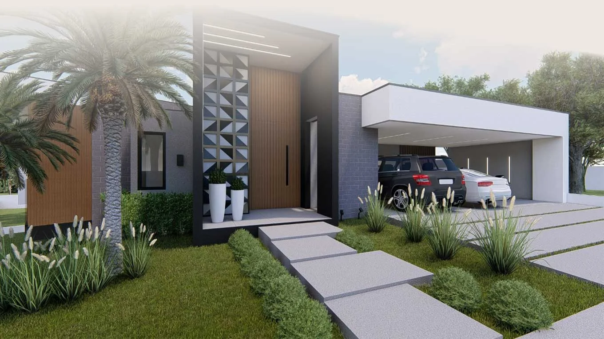

Solicitar orçamento
Conte onde
você está agora.
Terreno, projeto, interiores ou obra em andamento: uma conversa inicial ajuda a entender o próximo passo.

Terreno, projeto, interiores ou obra em andamento: uma conversa inicial ajuda a entender o próximo passo.